หนึ่งหน้าต่องาน อ่านเฉพาะหน้าของตำแหน่งตัวเอง ทุกปุ่มและข้อความในคู่มือตรงกับหน้าจอจริง · ลูกค้าใช้งานผ่านเว็บไซต์ทั้งหมด (สมัคร บัตรสมาชิก แต้ม จองซิม แลกรางวัล)
| ตำแหน่ง | งานหลัก | หน้า |
|---|---|---|
| พนักงานหน้าร้าน | หาและสมัครสมาชิก · ใส่เบอร์ในบิล · รับจองและเช็กอินซิม · ตรวจคูปอง | 2 · 3 · 5 · 8 |
| บริการลูกค้า | เหมือนหน้าร้าน + ปรับแต้ม (ครั้งละไม่เกิน ±1,000) · ดูแลคำขอแลกของ · ส่งคำขอรวม/ลบบัญชี | 2 · 3 · 5 · 8 |
| ผู้จัดการสาขา | ทุกอย่างของหน้าร้าน + นำเข้า POS · ปิด lane · ยกเลิกรอบนำเข้า | 2 – 5 · 8 |
| การตลาด | โปรโมชัน บทความ รูปและข้อความหน้าเว็บ · แคตตาล็อกรางวัล · ดูแลคำขอแลกของ | 5 · 6 |
| ผู้ดูแลระบบ | ทุกอย่าง + ผู้ใช้ สิทธิ์ ตั้งค่า รวม/ลบบัญชี ความพร้อมเปิดใช้ | ทุกหน้า · 7 |
MSTMEMBER:0891112233 หรือ MSTMEMBER:MST00000001
เบอร์เขียนแบบไหนก็ได้ (089-111-2233, +66…) · ตัวพิมพ์เล็กใหญ่ไม่มีผล · ถ้าเบอร์ยังไม่เป็นสมาชิก ระบบสร้างสมาชิกให้ตอนนำเข้า และลูกค้าได้แต้มต้อนรับเมื่อมาสมัครบนเว็บด้วยเบอร์นั้น · ลืมใส่ = บิลนี้ไม่มีใครได้แต้ม
ถ้าขึ้น "เบอร์นี้เป็นสมาชิกอยู่แล้ว" ให้กด เปิดข้อมูลสมาชิกเดิม → ไม่ต้องสร้างใหม่ · ลูกค้าที่สมัครที่เคาน์เตอร์ เข้าเว็บด้วยเบอร์เดียวกันก็เห็นบัตรและแต้มเดิม ไม่ได้แต้มต้อนรับซ้ำ
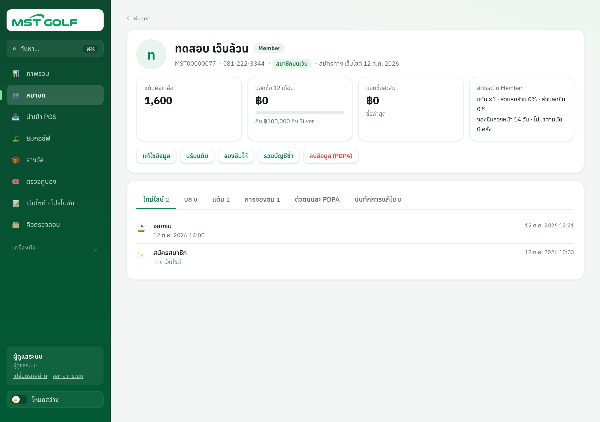
ลูกค้าจองเองบนเว็บได้ทันทีถ้าช่องว่าง (ไม่ต้องรอร้านยืนยัน) · การจองจากเว็บ walk-in และโทรจองอยู่ในตารางเดียวกัน จองซ้อนไม่ได้ · หน้านี้อัปเดตเองทุก 15 วินาที · ดูได้ทั้งแบบ รายวัน และ รายสัปดาห์
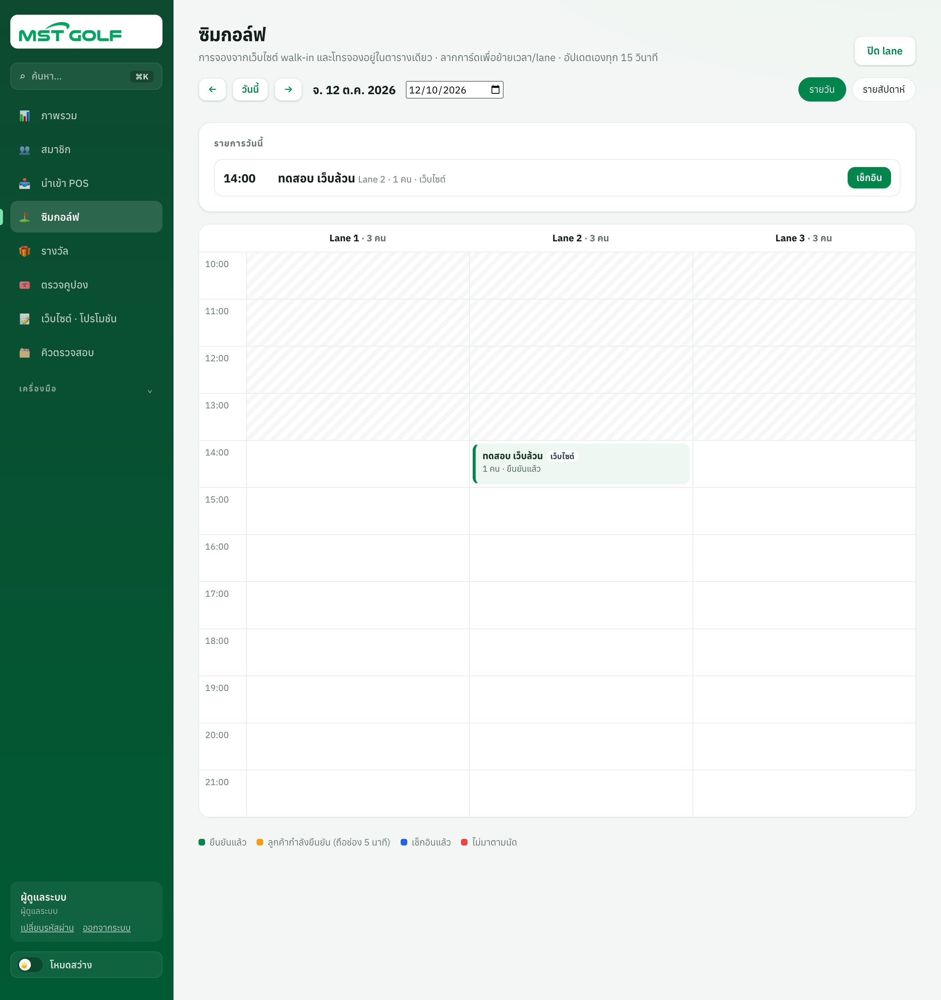
พนักงานจองให้เกินโควตาที่ลูกค้าจองเองได้ แต่จองช่องที่ผ่านไปแล้ว ช่องที่ปิด หรือเกินจำนวนคนต่อ lane ไม่ได้
เช็กอินได้ตั้งแต่ 3 ชั่วโมงก่อนเวลาจอง · ลูกค้าชำระที่ร้าน ไม่มีจ่ายออนไลน์
ลากการ์ดไปช่องว่าง หรือกด ย้ายเวลา / lane (วันเดียวกัน) · เปลี่ยนวัน = ยกเลิกแล้วจองใหม่ · ระบบแจ้งลูกค้าให้
ยกเลิกการจอง ต้องใส่เหตุผล (ระบบแจ้งลูกค้า ช่องว่างให้คนอื่นจองทันที) · ไม่มาตามนัด กดได้หลังเวลาเริ่ม 15 นาที และนับในประวัติลูกค้า
กด ปิด lane แล้วเลือก lane วัน เวลา และเหตุผล (ปิดซ่อม · ปิดส่วนตัว · อีเวนต์) · ถ้ามีการจองอยู่ต้องย้ายก่อน · เปิดคืน: กดแถบสีเทา
เขียว ยืนยันแล้ว · ส้ม ลูกค้ากำลังกดยืนยันในมือถือ (ระบบกันช่องไว้ 5 นาที ถ้าไม่ยืนยัน ช่องว่างเอง) · น้ำเงิน เช็กอินแล้ว · แดง ไม่มาตามนัด · ลายเทา ปิด lane · ลูกค้าจองเองได้ตามกติกาใน ตั้งค่า › การจองซิม
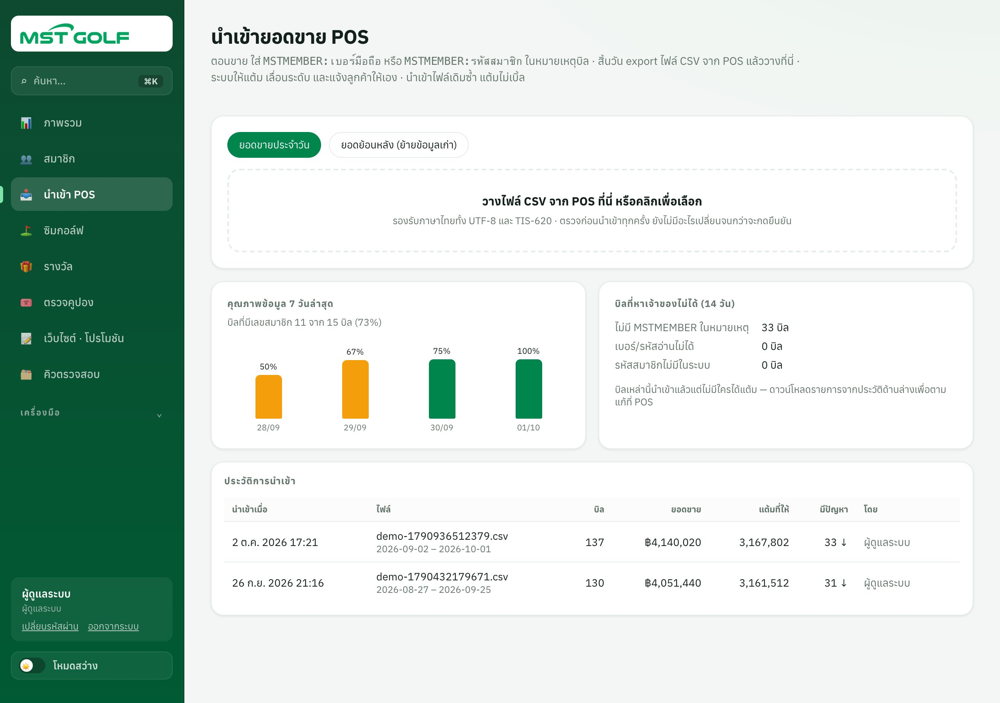
| ไม่มีเจ้าของ | นำเข้าได้ แต่ไม่มีใครได้แต้ม เพราะไม่มี MSTMEMBER อ่านเบอร์ไม่ได้ หรือไม่พบรหัส |
| ผิดรูปแบบ | ข้าม เพราะไม่มีเลขบิล อ่านวันที่/ยอดไม่ได้ หรือบิลคืนไม่มีบิลอ้างอิง |
| ซ้ำ | ข้าม เพราะบิลนี้นำเข้าแล้ว (นำเข้าไฟล์เดิมซ้ำ แต้มไม่เบิ้ล) |
บิลคืน/ยกเลิก ระบบหักแต้มตามสัดส่วนบิลเดิมให้อัตโนมัติ · ในประวัติ กดตัวเลข มีปัญหา เพื่อดาวน์โหลดรายการไปแก้ที่ POS
ทำได้ภายใน 7 วัน · ถ้ารอบหลังมีบิลคืนที่อ้างถึงรอบนี้ ต้องยกเลิกรอบหลังก่อน
โหมด ยอดย้อนหลัง (ย้ายข้อมูลเก่า) ใช้กับยอด 12 เดือนก่อนเปิดระบบ: นับเข้ายอดซื้อเพื่อจัดระดับ แต่ ไม่ให้แต้มและไม่แจ้งลูกค้า · การ์ด คุณภาพข้อมูล 7 วันล่าสุด บอก % บิลที่มีเลขสมาชิก ถ้าต่ำลงเมื่อไร ตามพนักงานที่ลืมใส่
ลูกค้าใช้แต้มแลกบนเว็บ · คูปอง ออกให้ทันทีพร้อม QR ใช้ที่ร้าน · ของรางวัล (เช่น iPad) เป็นคำขอที่ทีมต้องดูแลจนส่งถึง · แต้มหักทันทีที่แลก และคืนเองถ้าคำขอไม่ผ่าน
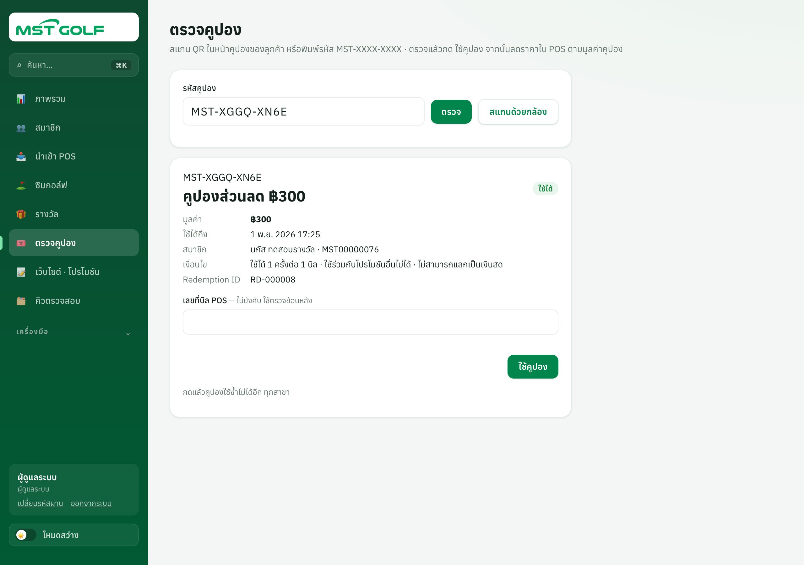
คูปองใช้ได้ครั้งเดียวทุกสาขา · ถ้าสแกนซ้ำ ระบบบอกว่าใช้ไปเมื่อไร ที่ไหน บิลไหน · คูปองหมดอายุไม่คืนแต้ม
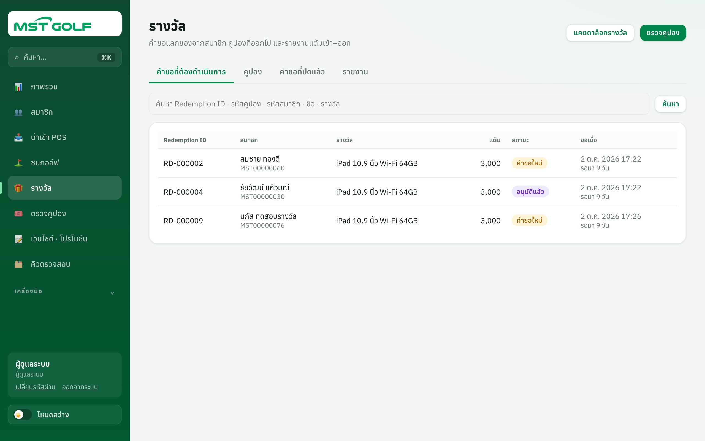
หน้าแรกของเว็บเปิดด้วยโปรโมชันที่กำลังแสดงอยู่: แถบบนสุด แบนเนอร์สไลด์ และการ์ดโปรโมชัน ทั้งหมดดึงจากเมนูนี้ · แก้แล้วขึ้นเว็บภายใน 5 นาที
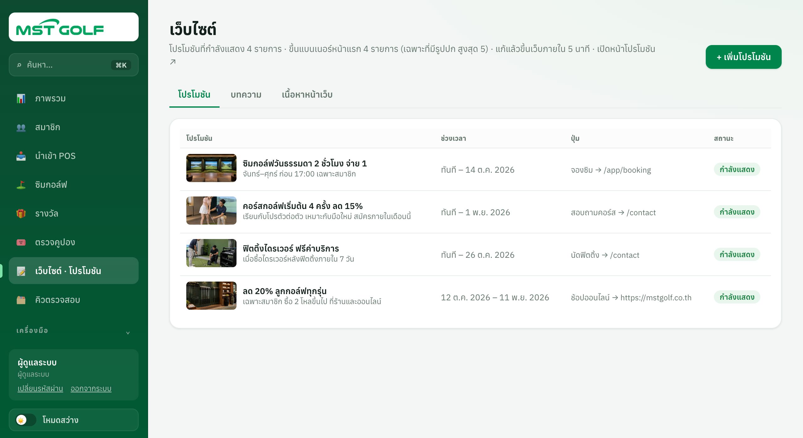
ต้องมีผู้ดูแลระบบที่ใช้งานอยู่อย่างน้อย 1 คน · เปลี่ยนตำแหน่งหรือปิดบัญชีของตัวเองไม่ได้
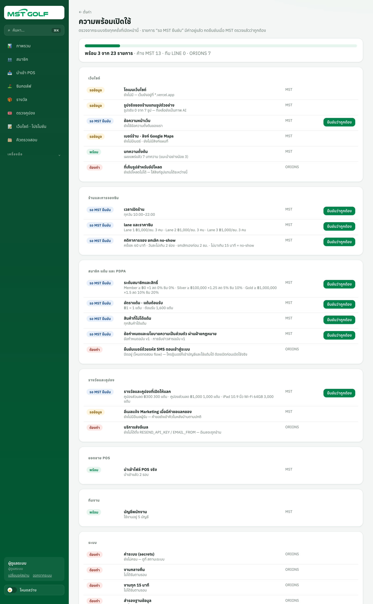
| ระดับสมาชิก | ชื่อระดับ · ยอดซื้อ 12 เดือนที่ต้องถึง · อัตราแต้ม · ส่วนลดร้าน/ซิม · ตัวคูณเดือนเกิด · จองล่วงหน้ากี่วัน |
| แต้ม · POS · การแจ้งเตือน | ยอดซื้อทุก ฿X ได้ Y แต้ม · แต้มต้อนรับ · โบนัสวันเกิด · คำนำหน้าในบิล (MSTMEMBER) · สินค้า/หมวดที่ไม่ได้แต้ม · เปิด/ปิดการแจ้งเตือนแต่ละแบบ (มีผลกับบิลที่นำเข้าหลังจากนั้น) |
| การแลกรางวัล | อีเมลการตลาดที่รับแจ้งคำขอแลกของ และข้อความจากหน้าติดต่อเรา |
| การจองซิม | เวลาเปิดร้านรายวัน · lane ราคา คนต่อ lane · กติกาจอง ยกเลิก ไม่มา เตือนก่อนเวลา |
| เว็บไซต์และร้าน | โดเมน · ร้านออนไลน์ · แผนที่ เบอร์ ที่อยู่ · ยืนยันเบอร์ด้วยรหัส SMS (ตอนนี้ปิดไว้เพื่อทดสอบ ต้องเปิดก่อนเปิดใช้จริง) |
| ข้อความ PDPA | ข้อกำหนดและนโยบาย (ผ่านฝ่ายกฎหมาย) · แก้แล้วออกฉบับใหม่ ลูกค้าเดิมเก็บฉบับที่เคยยอมรับ |
| สถานะระบบ | งานกลางคืน งานทุก 15 นาที และการสำรองข้อมูลต้องขึ้น "ปกติ" · ถ้าขึ้นแดง แจ้ง ORIONS |
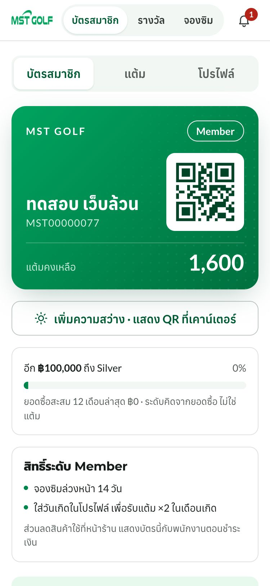
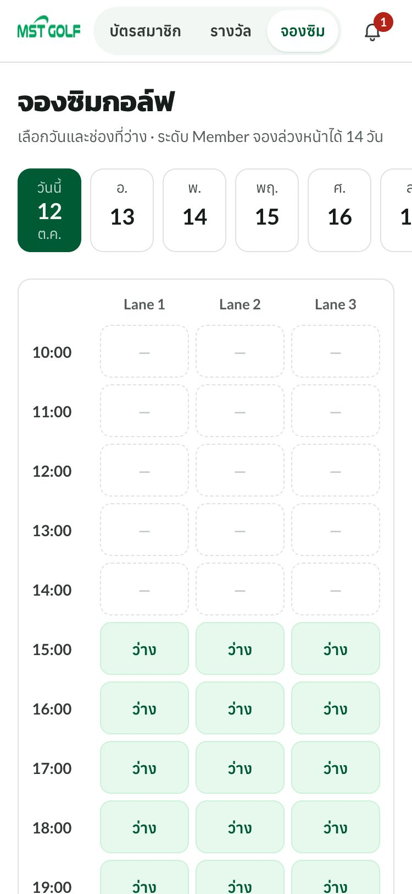
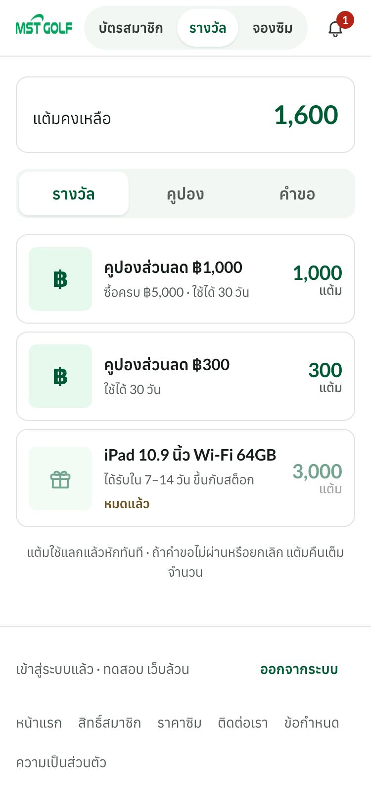
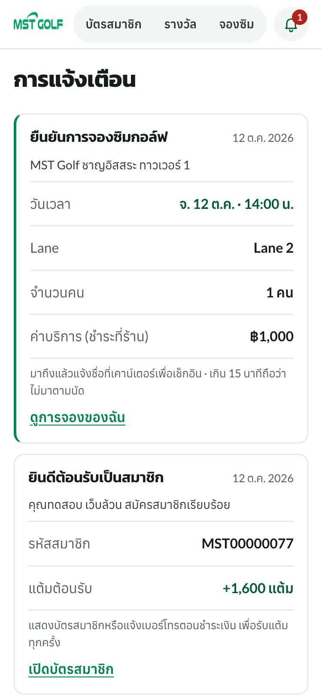
| ลูกค้าถาม | ตอบ / ทำอะไร |
|---|---|
| ซื้อแล้วแต้มไม่ขึ้น | แต้มเข้าหลังร้านนำเข้ายอดขาย (ปกติวันถัดไป) · เปิดหน้าสมาชิก แท็บ บิล ถ้าไม่มีบิลนั้น แปลว่าบิลไม่มี MSTMEMBER หรือยังไม่นำเข้า ให้แจ้งผู้จัดการ · ถ้ายืนยันได้ว่าบิลเป็นของลูกค้า บริการลูกค้าปรับแต้มพร้อมใส่เลขบิลในเหตุผล |
| ทำไมยังไม่ขึ้น Silver | ระดับคิดจากยอดซื้อสุทธิ 12 เดือนย้อนหลัง ไม่ใช่แต้มคงเหลือ · บัตรบอกว่าเหลืออีกกี่บาท · ขึ้นทันทีเมื่อถึง และลดเฉพาะรอบทบทวนวันที่ 1 |
| เข้าเว็บไม่ได้ / ลืมว่าใช้เบอร์ไหน | ค้นชื่อในหน้าสมาชิกเพื่อดูเบอร์ที่ผูกไว้ · ถ้าลูกค้าเปลี่ยนเบอร์ แก้ใน แก้ไขข้อมูล (ตรวจตัวตนก่อน) |
| คูปองใช้ไม่ได้ | ตรวจใน ตรวจคูปอง: ใช้ไปแล้ว / หมดอายุ / ยกเลิก จะบอกเหตุผลและวันที่ · ยอดซื้อไม่ถึงขั้นต่ำ ใช้ไม่ได้ |
| ของรางวัลมาเมื่อไร | ลูกค้าดูสถานะได้ที่ รางวัล › คำขอ · พนักงานเปิดคำขอจาก Redemption ID ในเมนู รางวัล |
| ใส่วันเกิดผิด | ลูกค้าแก้เองไม่ได้ (ตั้งได้ครั้งเดียว) · พนักงานแก้ใน แก้ไขข้อมูล |
| ยกเลิกจองไม่ได้ | เลยเวลาที่ลูกค้ายกเลิกเองได้แล้ว · พนักงานยกเลิกให้ในตารางซิมพร้อมเหตุผล |
| ขอลบข้อมูลส่วนตัว | กด ขอรวมบัญชี / ขอลบข้อมูล › ลูกค้าขอลบข้อมูล · แจ้งลูกค้าว่าแต้มและคูปองที่ยังไม่ใช้จะหายไปด้วย |